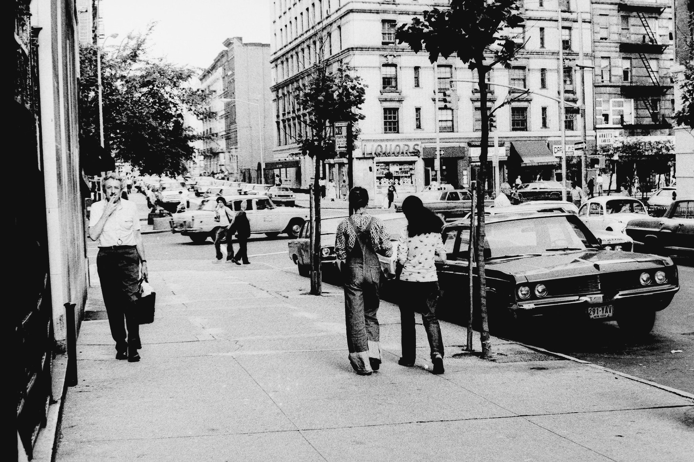
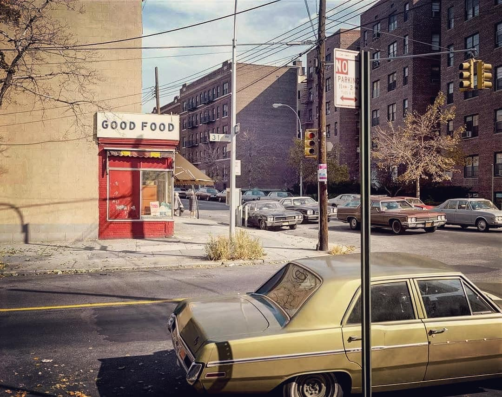

Happy Birthday Stevie

No, this isn’t a post-war dystopia shot, nor is it the South Bronx. This is 96th and Broadway in the 1970s.
Happy Birthday Stevie
No, this isn’t a post-war dystopia shot, nor is it the South Bronx. This is 96th and Broadway in the 1970s.

105th and Broadway, circa 1970

The Stillers in the 70s
RIP Jerry
Times Square, 1984. Hot, wet, and succulent.

Good Food. 31st Avenue & Crescent St, Astoria Queens 1974.